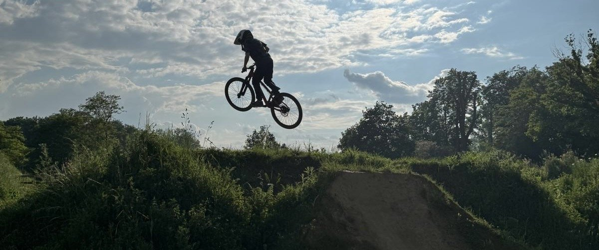

Ein großes Shoutout an unsere Sponsoren
Unsere Geschichte wäre ohne die großzügige Unterstützung unserer Sponsoren und die partnerschaftliche Zusammenarbeit mit der Stadt Köln nicht möglich gewesen. Diese wertvollen Partner haben nicht nur finanzielle Mittel bereitgestellt, sondern sind auch zu unverzichtbaren Botschaftern unserer Mission geworden.
Ein besonderer Dank gebührt unseren Sponsoren, die mit ihrem Engagement und ihrer Großzügigkeit den Grundstein für die Verwirklichung unserer Ziele gelegt haben. Ihre Unterstützung erstreckt sich nicht nur über finanzielle Mittel hinaus, sondern spiegelt auch ihre Glaubwürdigkeit und Überzeugung in die Bedeutung unserer Arbeit wider. Durch ihre Partnerschaft ermöglichen sie nicht nur den Fortbestand unseres Vereins, sondern tragen aktiv zur Verwirklichung unserer Projekte und Veranstaltungen bei.
Die Unterstützung der Stadt Köln ist ein Schlüsselelement unserer Erfolgsgeschichte. Die Stadt hat nicht nur ein offenes Ohr für unsere Bedürfnisse, sondern steht auch als verlässlicher Partner an unserer Seite. Die konstruktive Zusammenarbeit mit den städtischen Behörden hat es uns ermöglicht, nicht nur ein passendes Gelände zu finden, sondern auch die erforderlichen Genehmigungen und Ressourcen zu erhalten. Die Stadt Köln teilt unsere Vision, dass Gemeinschaftsprojekte einen positiven Beitrag zum Wohlbefinden der Bürger leisten können, und unterstützt uns aktiv in der Umsetzung unserer Ideen.
Die Partnerschaft mit unseren Sponsoren und der Stadt Köln ist weit mehr als eine finanzielle Unterstützung. Es ist eine kraftvolle Zusammenarbeit, die auf gegenseitigem Vertrauen, Respekt und dem gemeinsamen Streben nach einer lebendigen und engagierten Gemeinschaft basiert. Wir schätzen die Unterstützung unserer Partner sehr und freuen uns darauf, gemeinsam weitere Meilensteine zu setzen und unsere Vision weiter zu verwirklichen.
Ein herzliches Dankeschön an unsere Sponsoren und die Stadt Köln für ihre entscheidende Rolle in unserem Erfolg. Ihre Unterstützung treibt uns an, weiterhin einen positiven Einfluss auf unsere Gemeinschaft auszuüben und gemeinsam Großes zu erreichen.